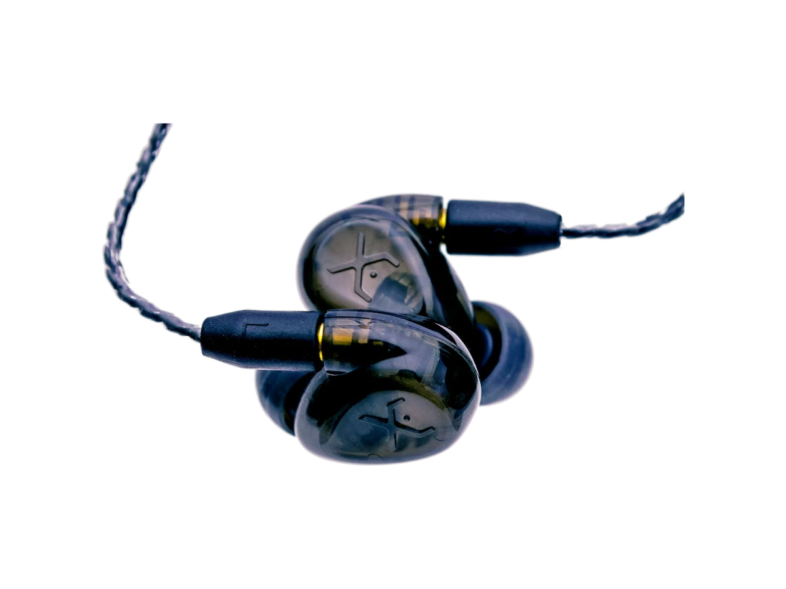
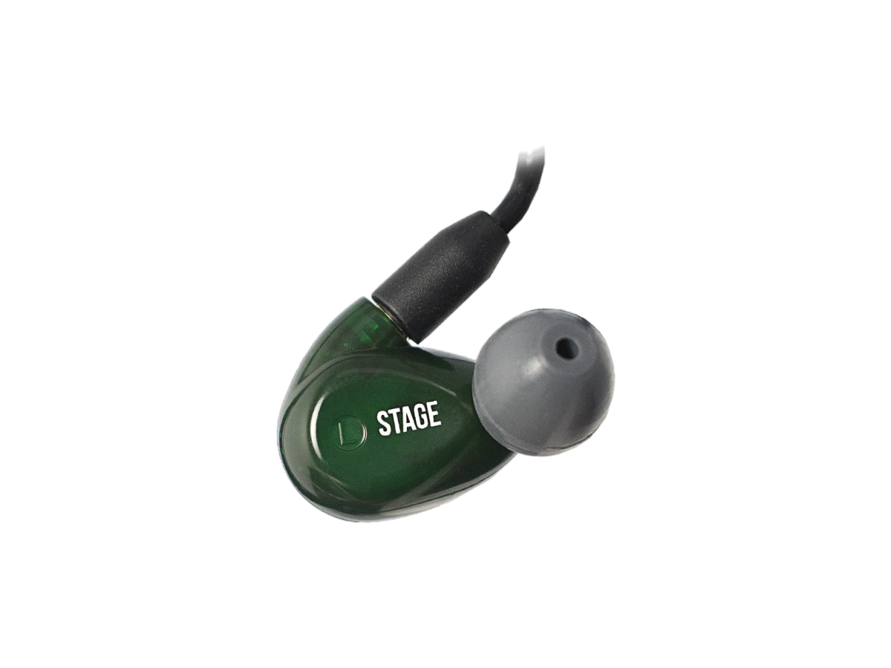
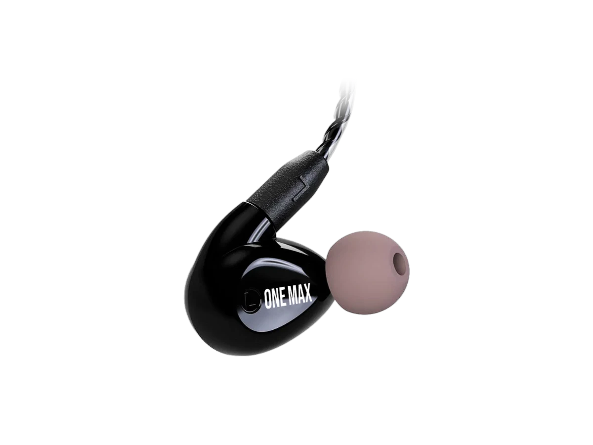

Universal · Sem pré-molde, sai em até 2 dias úteis
Xtreme One Plus
Topo da linha universal
O universal que chega mais perto de um moldado.
Indicado paraMúsicos e audiófilos
Pronta entrega: sai em até 2 dias úteis
- 1 ano de garantia
- Feito no Brasil
No palcoAquiles Priester usa Xtreme One Plus
Como soa
Topo da linha universal
Três microdrivers de armadura balanceada com tecnologia Knowles e crossover integrado de três vias, que minimiza a interferência entre as faixas e resulta em baixa distorção e melhor clareza. Cabo trançado removível, então manutenção e troca não aposentam o fone. Ponteiras de espuma e silicone acompanham.
Três drivers dedicados
Grave, médio e agudo cada um no seu transdutor, como na linha PRO.
Alta resolução
Graves profundos, médios transparentes e agudos ricos em detalhe.
Cabo removível
Troca sem perder o fone — o cabo é a peça que mais sofre.
Ficha técnica
Configuração dos drivers
- 3 microdrivers de armadura balanceada com tecnologia Knowles
- 1 crossover integrado de três vias
- Cabo trançado removível
- Ponteiras de espuma e silicone
- Impedância (1 kHz)
- 26 Ω
- Sensibilidade
- 121 dB/mW
- Resposta de frequência
- 10 Hz – 17 kHz
Na caixa
- Fone in-ear universal
- Kit de ponteiras de silicone e espuma
- Estojo
- Manual do usuário
- 1 anode garantia contra defeito de fabricação e entupimento
- 60 diaspra ajustar o molde, inclusive refazendo a concha
- Desde 2010projetando e fabricando in-ear moldado no Brasil
- Frete grátispra todo o Brasil, com rastreio
Compare
Outros que podem servir.

Xtreme Stage
O primeiro in-ear
Quem curte um verdadeiro som

Xtreme ONEMAX
Quatro drivers sem pré-molde
Cantores, tecladistas e audiófilos

XE ONE+/PRO
Separação instrumental e som limpo
Bateristas, baixistas e guitarristas
Dúvidas
Sobre o Xtreme One Plus.
Posso devolver um moldado?
Não, porque ele é feito pro seu ouvido e não serve em mais ninguém. Dá pra trocar por outro modelo pagando a diferença. Universais podem ser trocados em até 7 dias, sem uso e na embalagem original.
Mais drivers é sempre melhor?
Não. Mais drivers dão mais resolução e separação, mas o certo é o que combina com o seu instrumento. Baterista costuma render mais com punch no grave do que com 12 drivers. É isso que a conversa resolve.
Dá pra ouvir o ambiente e a plateia?
Existe a opção Ambient: ventilação com 4 plugues que deixam entrar o som de fora e 1 plugue fechado que devolve o isolamento total. O preço é um pouco de grave a menos com a ventilação aberta.
Posso colocar a minha logo?
Pode. A logo vai gravada no faceplate. Precisa de arquivo vetorial (CorelDraw ou Illustrator). Também tem madeira, aço escovado, fibra de carbono, cristais e glitter, em mais de 20 cores.
O frete é grátis?
A Xtreme Ears anuncia frete grátis e entrega em todo o Brasil. Na garantia, se o defeito for avisado em até 7 dias da entrega, ela paga ida e volta.